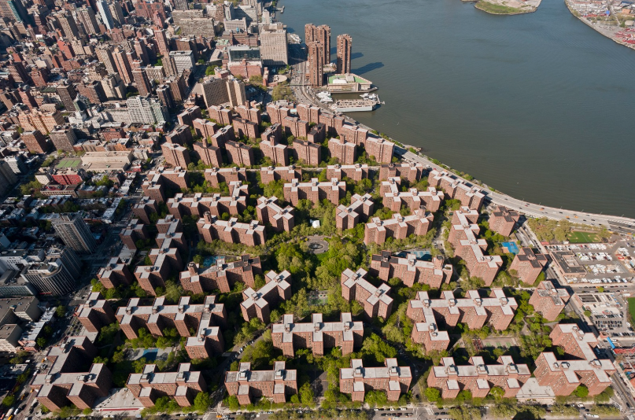
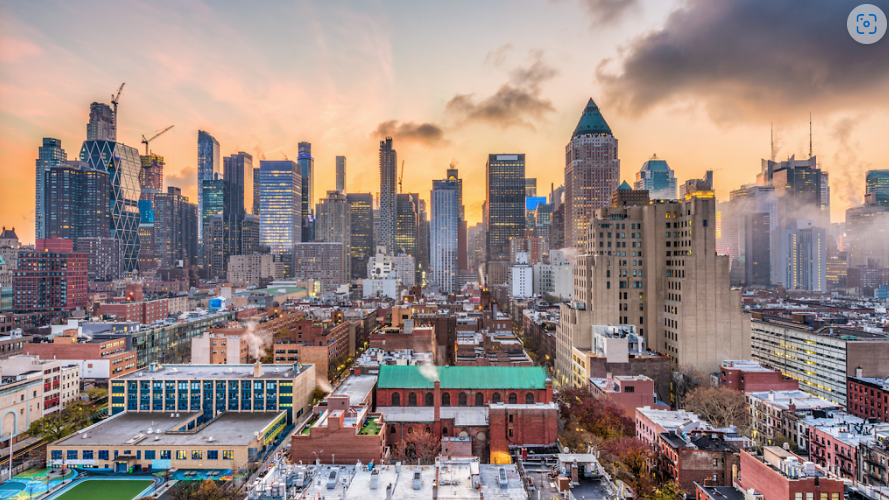

An Analysis on Affordable Housing in Three Different Neighborhoods
By: Nicholas Cheung, Maxim Petrov, and Roselio Ortega
Websites and Slides
StuyTown (by Nicholas Cheung): https://nmcheung04.github.io/
Washington Heights (by Maxim Petrov): https://maxiimpetrov.github.io/
Hell's Kitchen (by Roselio Ortega): https://ortross03.github.io/
Slides: https://docs.google.com/presentation/d/1sbxAuKQPmbKIBe8_HMWnh9p1yj-hewTi5dC3P1rGaYw/edit#slide=id.p
The Neighborhoods
StuyTown
Zipcode: 10009 and 10010
Population: 148,482
Median Household Income: $162,350
Demographic: 66.1% white, 15.5% Asian, 9.2% Hispanic, 6.8% Black, 2.4% other races

Fig.1 - A Map of StuyTown
Washington Heights
Zipcode: 10033
Population: 204,096
Median Household Income: $56,230
Demographic: 67.9% Hispanic, 19.2% white, 7.9% Black, 2.5% Asian, 2.5% other races
 Fig.2 - A Map of Washington Heights
Fig.2 - A Map of Washington Heights
Hell's Kitchen
Zipcode: 10018, 10019, and 10036
Population: 62,365
Median Household Income: $110,504
Demographic: 54% white, 19% Asian, 19% Hispanic, 4% Black, and 4% other races

Fig.3 - A Map of Hell's Kitchen
Ranking of Desireable Qualities of a Neighborhood
The three most desirable qualities that our group thought were the most important were Crime & Safety, Schools, and Affordability in that order.
What we care the most about is that we are safe in our homes without having to worry about potentially being forced to move out and spend more money on housing as a result of a dangerous crime near our area.
We care about the availability and quality of education in our neighborhood the second most because we believe that a good education is essential for our future kids to obtain a successful future.
Without quality education, it’s a lot harder to find a job. The third most important quality that we care about is affordability. Being in debt limits a lot of choices in life. We want to be financially stable and not have to spend our lifetime paying back loans.
While other qualities like nightlife, diversity, and transportation are also extremely important, we believe that for the sake of a more stable future, it is these three qualities that we should prioritize.
When ranking our individual neighborhoods, all our neighborhoods fared around the same.
If we were to let our 3 neighborhoods, Hell’s Kitchen, Washington Heights, and StuyTown, be representative of the entire Manhattan Borough, our ranking would go as follows.
In terms of schooling, with schools like Stuyvesant High School, the Anderson School, the New Exploration into Science, Technology and Math School, and Hunter College High School, Manhattan is not limited to its very specialized schools.
For this reason, we give Manhattan an A rating for schooling. In terms of crime and safety, we give Manhattan a B rating. Within our three neighborhoods, there was an average of roughly 1600 violent crimes and 3600 property crimes committed a year. Manhattan is not the safest place, but it’s also not the most dangerous.
In terms of housing, we give Manhattan a D rating. Manhattan is notorious for being extremely expensive. The median rent between all three of our neighborhoods ranged from $2500 a month to nearly $3000 a month.
This sort of price is not affordable for a majority of people. The fact that 86% of people rent instead of own in specifically Hell’s Kitchen, also goes to show how expensive living in Manhattan is. In terms of nightlife, we give Manhattan an A- rating.
There are plenty of theaters, bars, restaurants, and other outgoing places to go to in the city. Manhattan has a very vibrant nightlife.
Using these four qualities as our criteria for ranking Manhattan, our overall rank for Manhattan is a B.
Analysis on Affordability
To determine affordability of a neighborhood, using an Affordable Housing Data set, we found the make up of Extremely Low Income Units, Very Low Income Units, and Low Income Units for each neighborhood.
From most affordable to least affordable, the ranking goes: Hell's Kitchen, Washington Heights, StuyTown
If we look at the median household incomes of each neighborhood, we can determine that there is a slight correlation between median household income nad affordability.
In addition to a neighborhood analysis, we also performed a cross-wide borough analysis on correlation bewteen affordability and crime rate and affordability and the frequency of more severe crimes.
In terms of affordability for boroughs, from most affordable to least affordble, the ranking goes: Staten Island, Bronx, Brooklyn, Queens, Manhattan
From highest crime rate to lowest crime rate, the ranking goes: Brooklyn, Manhattan, Bronx. Queens, Staten Island
There is a slight correlation between affordability and crime rate.
When looking at the frequency of more servere crimes, the data showed that nearly every borough had roughly the same percentage of violations, misdemeanors, and felonies.
There is no correlation bewteen affordability and the frequency of more servere crimes.